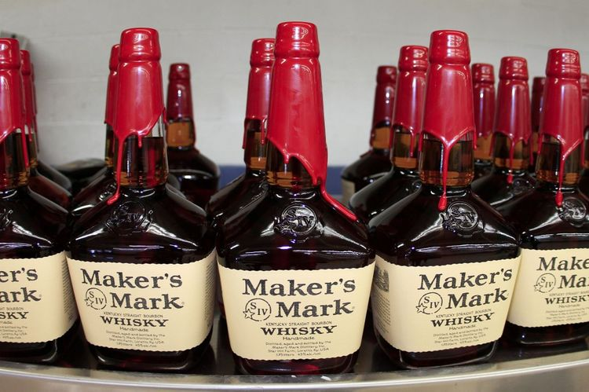

- WILD TURKEY
- Buffalo Trace
- Maker's Mark
메이커스 마크의 역사는 여느 버번과 마찬가지로 18세기 말, 종교적 박해와 가난을 피해 신대륙으로 이주한 스코틀랜드.아일랜드인의 역사와 궤를 같이 한다. 1794년 주세법이 발효되자 이를 피해 증류업자들이 켄터키주로 이주해 버번을 탄생시켰고 이들 가운데 한 사람이 로버트 사무엘스(Robert Samuels)였다. 1840년 T.W. 사무엘스가 가문 최초의 증류소를 건설하면서 가업이 시작되었다. 그러다 1953년 빌 사무엘스는 더욱 뛰어난 위스키를 만들기로 결심하고, 가문 비전의 위스키를 불태워 버리고 새로운 배합을 시도했다. 이리하여 1954년 새로운 위스키를 통에 넣었고, 1958년 메이커스 마크 최초의 병이 세상에 첫 선을 보였다.
80년대 이후 몇차례 대형주류업체에 팔리다 2005년 포춘 브랜즈(Fortune Brands) 산하로 들어갔다. 포춘 브랜즈가 거느린 유명 주류는 메이커스 마크 이외에 짐빔, 라프로익, 아드모어, 캐나디안 클럽, 사우자 데킬라 등이 있다. 이후 포춘 브랜즈가 분리되면서 Beam Inc.쪽으로 넘어가게 되었으며, 2013년 Beam Inc.가 산토리에 팔리면서 산토리 산하가 되었다.
